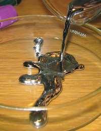
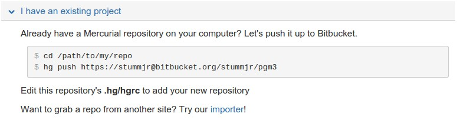

Instalação do Mercurial
Antes de mais nada, é preciso instalar o Mercurial em sua máquina. Vá até a página de downloads do Mercurial e baixe a versão apropriada para o seu sistema operacional.
Se você estiver usando Windows, que culpa eu tenho? :P Brincadeira, no Windows, não esqueça de marcar a opção que inclui os executáveis do Mercurial no PATH do seu SO, ao final da instalação. Veja a imagem abaixo:
|
Sistemas Linux baseados em Debian/Ubuntu
Em sistemas que utilizam o sudo apt-get install mercurial |
Feita a instalação, você pode testá-lo abrindo o shell do seu sistema operacional e tentando executar o Mercurial, cujo executável se chama hg. A imagem abaixo apresenta a execução do Mercurial que, sem parâmetro algum, apenas mostra um texto de ajuda:
|
Por que hg?
O Mercúrio é o elemento de número atômico 80 na tabela periódica e seu símbolo é Hg. Está explicado?

Figure 3. Um pouquinho de mercúrio líquido
|
Comandos básicos
Agora vamos usar o Mercurial para fazer o controle de versão de um projetinho de exemplo que vou criar. Primeiramente, vou criar uma pasta no meu sistema de arquivos onde os arquivos do projeto serão armazenados:
$ mkdir src/scm $ cd src/scm/
Depois que estivermos dentro da pasta (o comando cd nos levou pra lá), podemos então criar um repositório local com o comando init do hg:
stummjr@qwerty:~/src/scm$ hg init
O comando init não mostra saída alguma para o usuário. Porém, podemos ver que o repositório foi criado quando listamos os arquivos contidos no diretório atual:
$ ls -la total 12 drwxr-xr-x 3 stummjr stummjr 4096 May 2 16:41 . drwxrwxr-x 17 stummjr stummjr 4096 May 2 16:38 .. drwxr-xr-x 3 stummjr stummjr 4096 May 2 16:41 .hg
Ao criar um repositório, foi criado um diretório oculto chamado .hg, que irá armazenar os metadados do nosso repositório.
Depois disso, vamos criar e editar nossos arquivos de código-fonte. Como parte do exemplo, vou criar dois arquivos simples: HelloWorld.java e HelloWorldTests.java.
public class HelloWorld {
private String user;
public HelloWorld() {
this.user = "world";
}
public HelloWorld(String user) {
this.user = user;
}
public String toString() {
return "Hello, " + this.user;
}
}public class HelloWorldTests {
public static void main(String args[]) {
HelloWorld hello = new HelloWorld("Joao");
assert hello.toString().equals("Hello, Joao");
}
}Após criá-los dentro do diretório do projeto, precisamos adicioná-los ao nosso recém criado repositório:
hg add HugeInteger.java HugeIntegerTests.java
|
Preste atenção!
Somente criar os arquivos de código e salvá-los no diretório do repositório não é suficiente. É preciso adicioná-los ao repositório, sempre! |
Agora que temos nossos arquivos de código no repositório, vamos criar uma versão do nosso projeto no Mercurial. Isso será feito com o comando commit:
hg commit -m "Primeira versão, com método toString() funcionando."
O comando commit recebe um parâmetro adicional — -m, de mensagem — seguido de uma mensagem que forneça informações sobre o commit que está sendo realizado, como uma explicação em alto-nível sobre o que há nessa nova versão.
|
O que é uma versão?
Quando falamos em "versão", estamos falando de um conjunto de alterações que foi feito no projeto de forma que ele esteja em um novo estado. Cuidado para não confundir com o conceito de "release". Por exemplo: o Firefox está na versão 35, mas isso não quer dizer que no seu repositório ele tenha somente 35 commits. Nesse caso, o número 35 diz respeito ao release do software. Já o conceito de versão no controle de versão diz respeito a um conjunto de alterações que levou o projeto a um novo estado. |
|
Deu erro?
Caso você tenha recebido a mensagem de erro abaixo ao fazer o primeiro commit, não se assuste, porque é normal. error: abort: no username supplied (see "hg help config") Isso acontece porque você não informou ao Hg o seu nome de usuário. Para resolver isso, crie um arquivo de texto chamado [ui] username = Seu nome <seuem@il.com> Pronto! Agora, tente novamente! |
Agora que temos uma versão gravada, podemos modificar o código novamente, sem medo de perder o que já temos lá gravado. Vamos incluir um novo teste no arquivo HelloWorldTests.java:
public class HelloWorldTests {
public static void main(String args[]) {
HelloWorld hello = new HelloWorld("Joao");
assert hello.toString().equals("Hello, Joao");
HelloWorld hello2 = new HelloWorld();
assert hello2.toString().equals("Hello, world");
}
}Como acabamos de modificar nosso código, é interessante que vejamos o que foi alterado em nosso projeto, antes de fazermos mais um commit salvando um novo conjunto de alterações em uma versão. Podemos fazer isso com o comando diff:
$ hg diff
O comando acima gera uma saída em formato diff:
--- a/HelloWorldTests.java Sat May 02 21:32:32 2015 -0300
+++ b/HelloWorldTests.java Sat May 02 21:35:30 2015 -0300
@@ -2,5 +2,7 @@
public static void main(String args[]) {
HelloWorld hello = new HelloWorld("Joao");
assert hello.toString().equals("Hello, Joao");
+ HelloWorld hello2 = new HelloWorld();
+ assert hello2.toString().equals("Hello, world");
}
}Observe que, no formato diff, as linhas que recém incluímos no arquivo que modificamos são precedidas por +. Para entender melhor o formato diff, leia a documentação.
Antes de fazer o commit, ainda podemos verificar o status dos arquivos do diretório com o comando status:
$ hg status M HelloWorldTests.java ? HelloWorld.class ? HelloWorldTests.class
O M precedendo o nome do arquivo HelloWorldTests.java indica que o mesmo foi modificado desde o último commit. Já os pontos de interrogação antes dos arquivos .class indicam que os mesmos são desconhecidos do Hg. Isso acontece porque não os adicionamos ao projeto, o que não é mesmo necessário.
Agora que sabemos o que foi alterado, podemos fazer o commit sem problemas.
hg commit -m "Adicionado teste para caso do construtor vazio."
Se quisermos ver o nosso histórico de versões já gravadas, podemos usar o comando log:
$ hg log changeset: 1:81393c31fa4b tag: tip user: "Valdir Stumm Junior <stummjr@gmail.com>" date: Sat May 02 21:48:39 2015 -0300 summary: Adicionado teste para caso do construtor vazio. changeset: 0:80af2b365abe user: "Valdir Stumm Junior <stummjr@gmail.com>" date: Sat May 02 21:32:32 2015 -0300 summary: Primeira versão, com método toString() funcionando.
Se quisermos voltar atrás depois de uma alteração, podemos usar o comando revert. Por exemplo, feito o commit, começamos a alterar nosso arquivo HelloWorld.java e, de repente, percebemos que as alterações não fazem sentido e queremos que nosso código volte ao estado do último commit. Para isso, basta:
hg revert HelloWorld.java
Se quisermos voltar para uma versão de um commit anterior, podemos especificar o número da revisão (versão) no comando:
hg revert -r 0 HelloWorld.java
O comando acima faz com que o arquivo HelloWorld.java volte para a versão 0. Para ver as versões armazenadas, podemos usar o comando hg log:
$ hg log changeset: 1:81393c31fa4b tag: tip user: "Valdir Stumm Junior <stummjr@gmail.com>" date: Sat May 02 21:48:39 2015 -0300 summary: Adicionado teste para caso do construtor vazio. changeset: 0:80af2b365abe user: "Valdir Stumm Junior <stummjr@gmail.com>" date: Sat May 02 21:32:32 2015 -0300 summary: Primeira versão, com método toString() funcionando.
Utilizando o BitBucket
O Bitbucket é um serviço de armazenamento de repositórios de código-fonte na "nuvem". Vamos utilizá-lo como meio de armazenamento para os nossos repositórios, de modo que sempre tenhamos backup de nosso código no Bitbucket. Assim, o bitbucket será o nosso repositório central.
Antes de qualquer coisa, é preciso registrar-se no Bitbucket, o que pode ser feito através do seguinte endereço: bitbucket.org/account/signup/. Após o registro, somos recebidos pela seguinte página:
Ao clicar no botão Create Repository, somos redirecionados para o formulário de criação de repositório:
Agora, vamos vincular o nosso repositório Mercurial local ao repositório Mercurial remoto do Bitbucket. Para isso, vamos até a pasta onde está o nosso repositório e vamos fazer um push, enviando os dados do nosso repositório local ao repositório remoto.
$ cd src/scm $ hg push https://stummjr@bitbucket.org/stummjr/pgm3
Como saída, teremos:
pushing to https://stummjr@bitbucket.org/stummjr/pgm3 http authorization required realm: Bitbucket.org HTTP user: stummjr password: searching for changes remote: adding changesets remote: adding manifests remote: adding file changes remote: added 2 changesets with 3 changes to 2 files
|
Observe que a URL passada ao Se você ficar na dúvida sobre qual é a URL que deve ser passada ao

|
Agora que temos nosso repositório local vinculado ao repositório remoto, podemos continuar trabalhando com o Mercurial da mesma forma que fizemos até então, porém, quando quisermos enviar nossas alterações para o repositório remoto (bitbucket), basta executar o comando hg push (não precisa mais passar a URL, pois a mesma já foi vinculada ao repositório local).
Quando quisermos trabalhar em um computador que não tenha o repositório, podemos fazer um clone do mesmo em tal computador, com o comando hg clone:
hg clone https://stummjr@bitbucket.org/stummjr/pgm3
Feito isso, agora podemos trabalhar com nosso código em qualquer lugar, bastando fazer os commits e os pushes quando for adequado.
Obtendo as alterções mais recentes
Uma vez que estejamos trabalhando e enviando novas alterações ao repositório central no bitbucket, de vez em quando será necessário atualizar o código local de uma máquina, para que ele receba as alterações mais recentes existentes no bitbucket.
Quando seu código local estiver desatualizado com relação ao remoto, faça um hg pull:
$ hg pull -u https://stummjr@bitbucket.org/stummjr/pgm3
Pronto, agora seu repositório local está atualizado com relação ao servidor.